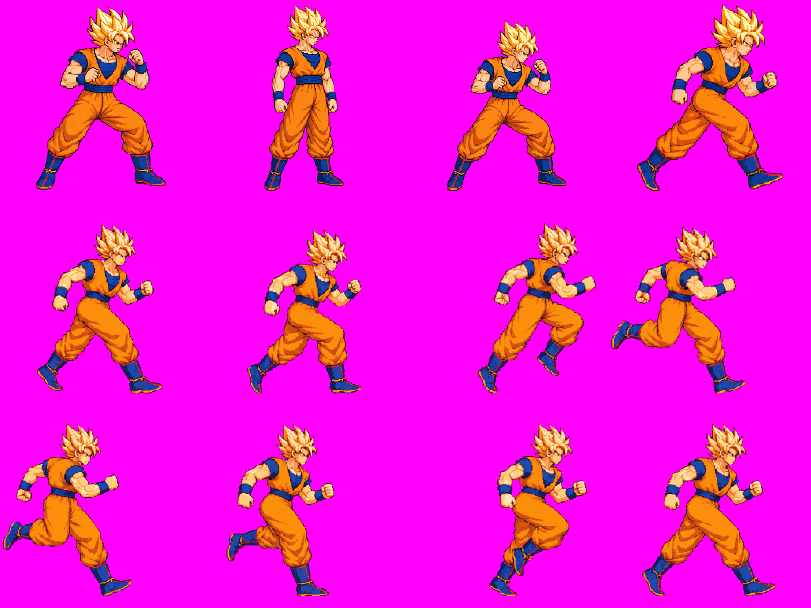
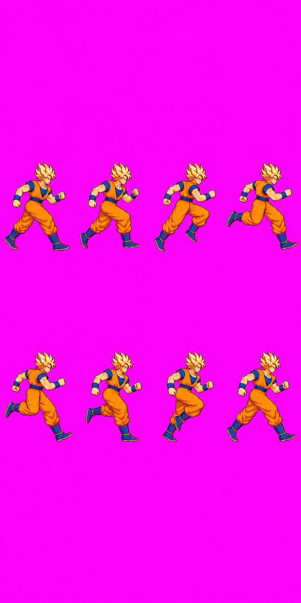
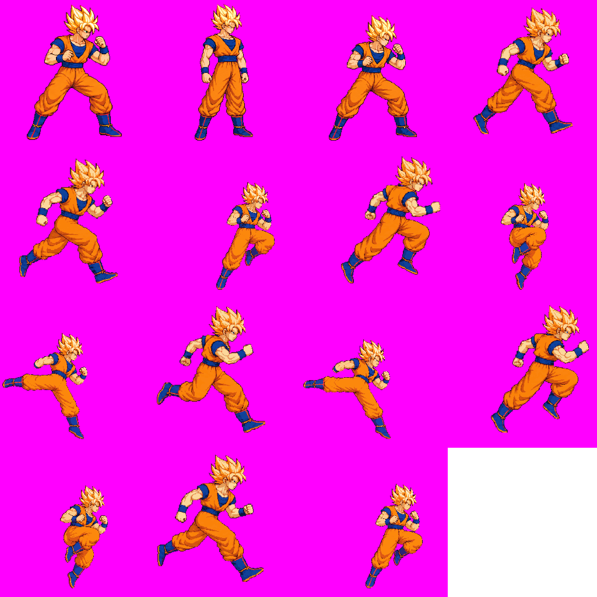
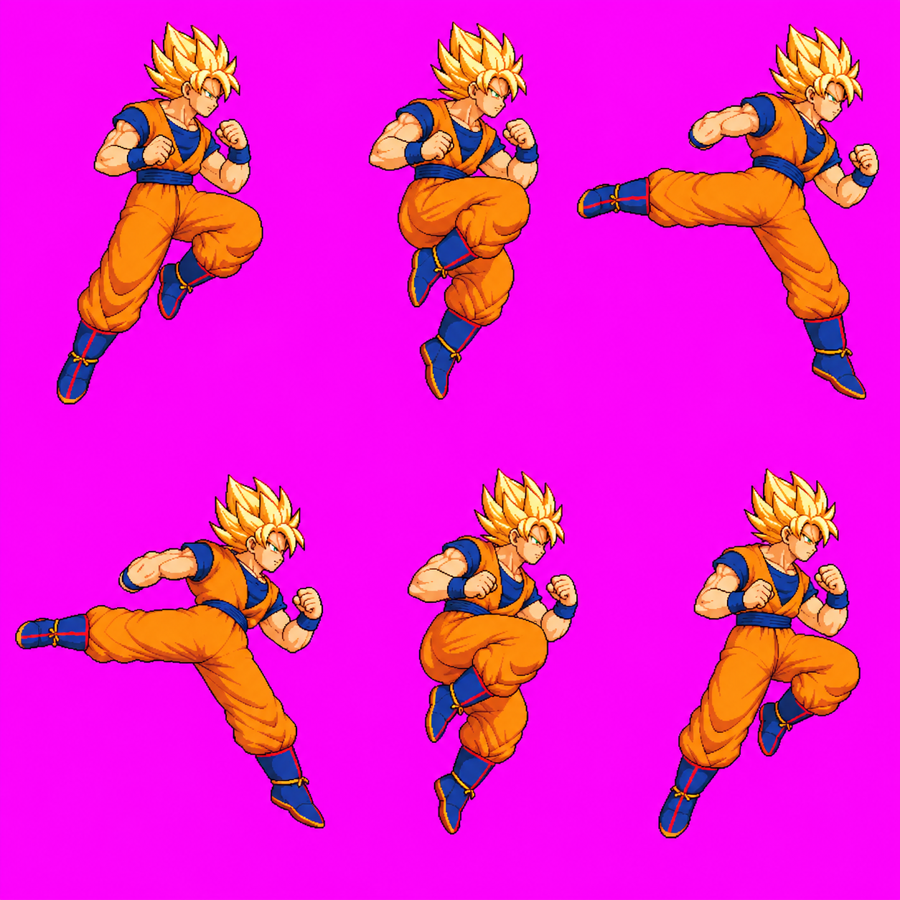

Character Art Audit #2 · Goku · B8 and B11
Goku redraw review
The user approved run v10 and bair v02 as drawn via Claude relay audit2 #8 ("Approve both"). Bair v02 also covers R3. GPT-6 Astra inspected the exact 48-color production atlas: run v10 has an internal registration hold, and bair v02 has a short upper-torso hold. The approval stands; runtime contact/root checks remain Claude-owned.
Review status
Eight-frame gait and 60 ms timing retained; hair and face redrawn at the approved idle scale.
Six-frame back kick retained; f0 chin/waist artifacts and f2 gi skin patch corrected; f3 kick moved inside the cell.
38 animations, 196 frames, 48 colors. Both approved versions are in the atlas; existing unrelated warnings remain.
Astra holds run v10 for internal registration and bair v02 for torso length. Runtime contact/root checks remain open.
approved as drawn User approval does not clear the Astra or runtime holds.
B8 · run v10 approved as drawn · Astra HOLD: registration
Astra's exact-atlas review finds visible anatomy and relative head/body scale acceptable, with all frames contained. HOLD: upper-head center shifts -80.5 px from f2 to f3 and +66.5 px from f5 to f6. The f7-to-f0 loop seam differs by only -3.5 px. This is an internal registration problem, not a scale failure; no rescale or offset was applied.

Open raw candidate

Candidate: raw run v10 · generation and measurement inventory · board SHA-256 B759965AB2E785C3F7D7668D67AB0D31D8B492D4031A145F330C225D16EB6F5A.

B11 · bair v02 approved as drawn · Astra HOLD: torso
All six back-kick frames are retained. The f2/f3 kick is complete and inside the cell after the measured f3 +14 px source-scale offset; no rescaling was applied. The f0 chin/waist color defects and f2 skin patch on the gi are corrected. Astra holds the near-upright f0/f5 torso at about 22–28 px from neckline to belt, versus about 34–40 px at idle (estimated 25–35% reduction, with about ±5–6 px uncertainty). The shorter chest remains clear in both frames.

Open raw candidate

Candidate: raw bair v02 · generation and measurement inventory · board SHA-256 861637CF8C932032312A90422735EA6F85424C96A9BAA5F56F3081AA06BCFFA7.

Technical and integration holds
The user-approved drawings retain their visual approval. The final Astra report records exact atlas SHA-256 E596D3BBFA12E13A26E8C59390E650A004BC3602E14939EFEDCB0693FDF9DF21 and metadata SHA-256 F97537105D1BE50BAC901936B4706C117777927439B605617464A479B49AAA94. Goku has no automatic head probe. The existing unrelated pack warnings are unchanged. Claude owns runtime root/contact integration checks.